General Description

Tu foto aquí
YOUR_PORTRAIT.jpg
Sylvester Stallone is an American actor, screenwriter and director who is well known for his movie sagas Rocky and Rambo. He is a special ambassador of Hollywood. During his childhood, he lived in poverty and had great difficulties, until he ended up living in a shelter. His big opportunity came when he wrote Rocky, and the movie became a huge cultural phenomenon. He once said that if he hadn't been an actor, he would have been an abstract painter or writer.
Most Famous Movies
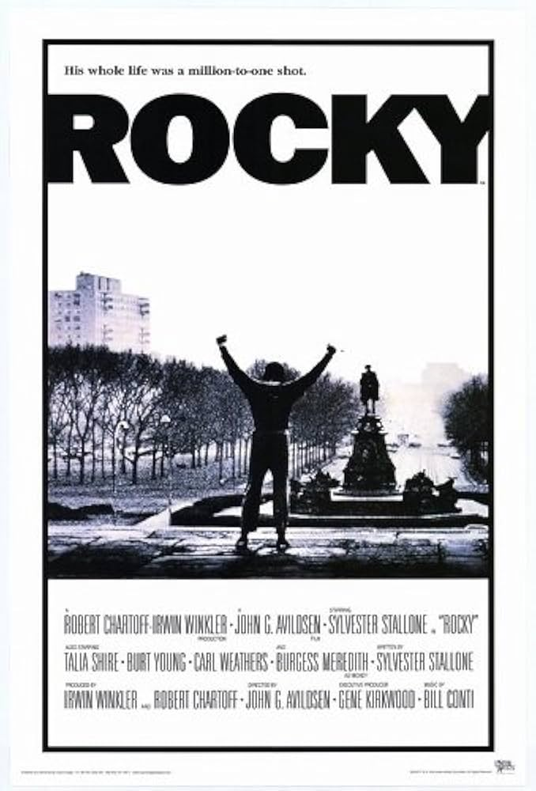
ROCKY
After watching a boxing match, Stallone wrote this script in just three days. He refused to sell it unless he could star in it — a decision that changed his life forever. Rocky won the Oscar for Best Picture.
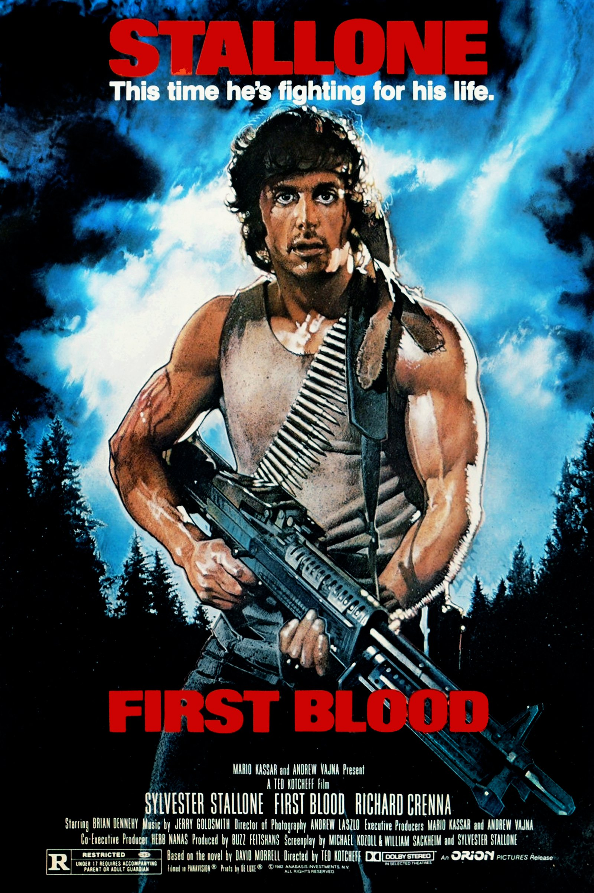
FIRST BLOOD
This film launched the Rambo franchise, which showcased the hardships of Vietnam veterans. John Rambo became a symbol of the "tough guy" era and one of cinema's greatest heroes.
ROCKY IV
Rocky faces a Soviet superathlete in a fight that transcended sport and became a Cold War cultural moment. One of the highest-grossing entries in the franchise with $300M worldwide.
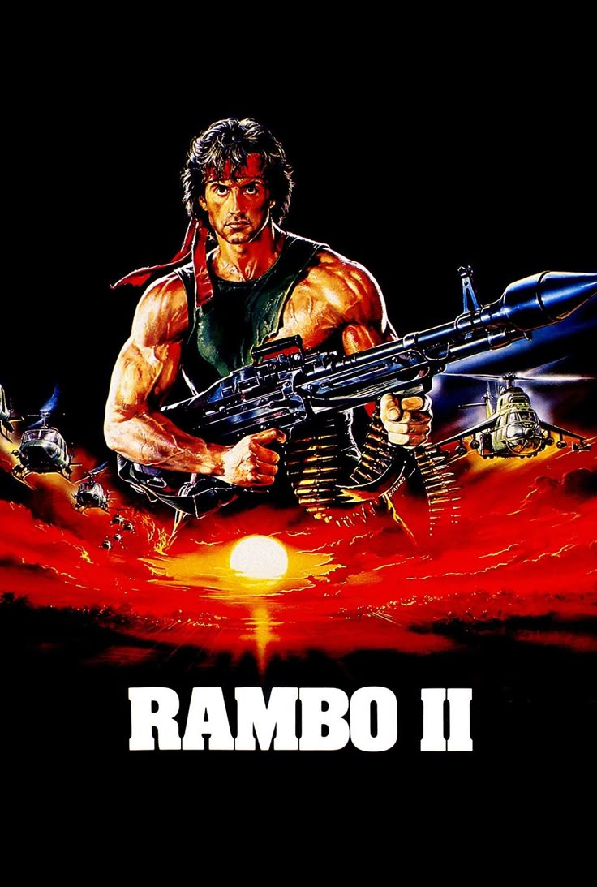
RAMBO II
John Rambo returns to Vietnam on a rescue mission. The film cemented Rambo as one of the most recognizable action franchises in Hollywood history, generating $300M worldwide.

ROCKY BALBOA
Even in his 60s, Stallone continued to reinvent himself. Rocky Balboa proved that age is no obstacle when passion and determination drive you forward.
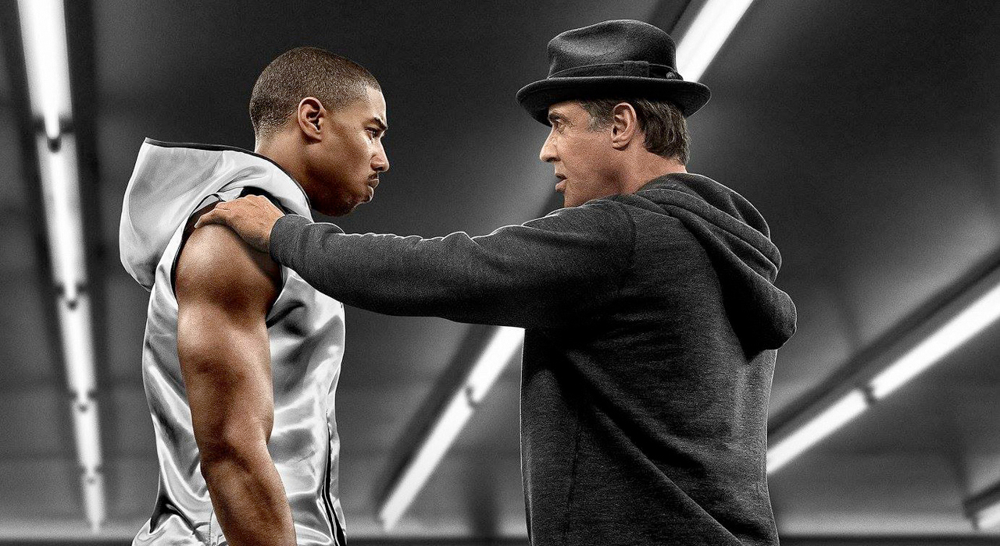
CREED
Stallone returned as Rocky's trainer. His performance was so powerful that many journalists claimed he deserved the Oscar. He won the Golden Globe for Best Supporting Actor.
Childhood
Sylvester Stallone was born on July 6, 1946, in New York City, USA. During his birth, doctors used forceps which caused nerve damage in his face. This left him with partial facial paralysis and a unique speech.
Stallone had a difficult childhood. His parents had many problems and later divorced. Because of his speech and appearance, he was bullied at school, but these experiences made him stronger and more determined.
As a teenager, Stallone became interested in sports and acting. He discovered that acting was something he loved and decided to pursue it as a career.
He studied drama at the University of Miami. During this time, he worked hard to become an actor and began writing — a skill that would later change his life.
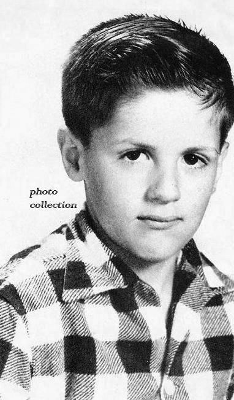
Foto de infancia
YOUR_CHILDHOOD.jpg
"I am not the richest, smartest, or most talented person in the world, but I succeeded because I keep going and going and going." — Sylvester Stallone
Professional Life
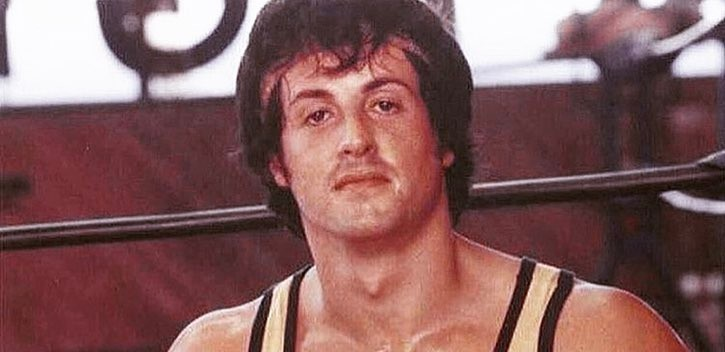
🌑'">Tough Beginnings Mid 1970s
In the mid-70s, Stallone was an actor with very little money. After watching a boxing match, he wrote the script for Rocky in just three days. Studios offered large sums for the script — but only without him as the star. He refused every offer until they agreed to let him play the lead role.
About the Success 1976
Critics reported that Rocky was a great movie. It was later announced that Rocky had won the Oscar for Best Picture. The film was a defining moment in Hollywood history and turned Stallone into a global superstar overnight.
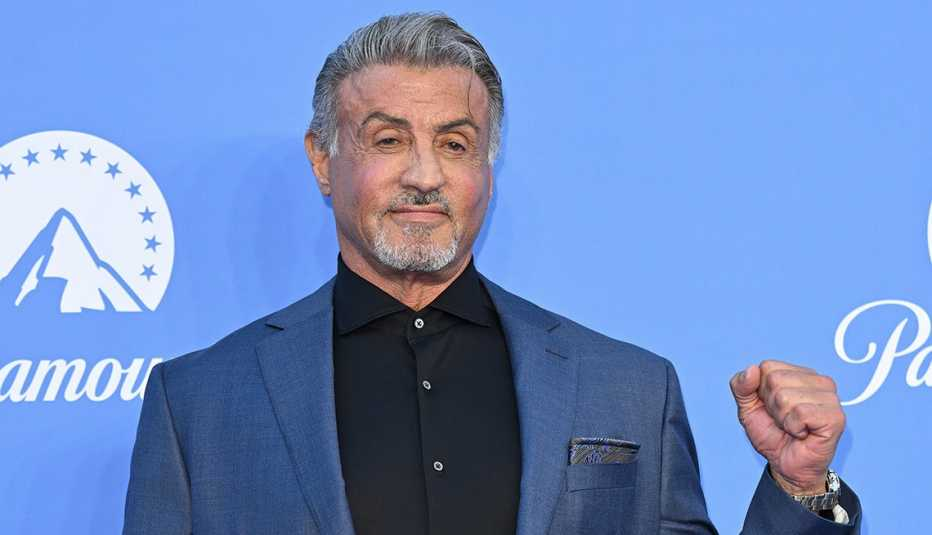
🎖️'">Action Icon & Global Fame 1980s–1990s
During the 1980s and 1990s, Stallone dominated the box office. He created the Rambo franchise, which showcased the hardships of Vietnam veterans, and became a symbol of the "tough guy" era. His rivalry with Arnold Schwarzenegger actually motivated both of them to work harder and make better movies.
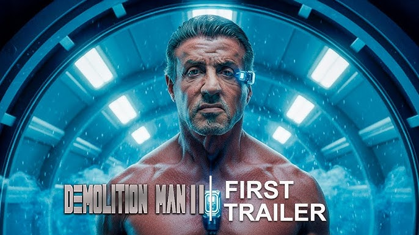
🌅'">Recent Success & Directing 2006–Present
Even in his 70s, Stallone continues to reinvent himself. He created The Expendables franchise, bringing together almost every major action star from the last 40 years. In 2015 he returned as Rocky's trainer in Creed — a performance so powerful many said he deserved the Oscar. He remains one of the few actors with a #1 movie in six different decades.
Achievements
Relevant Connections
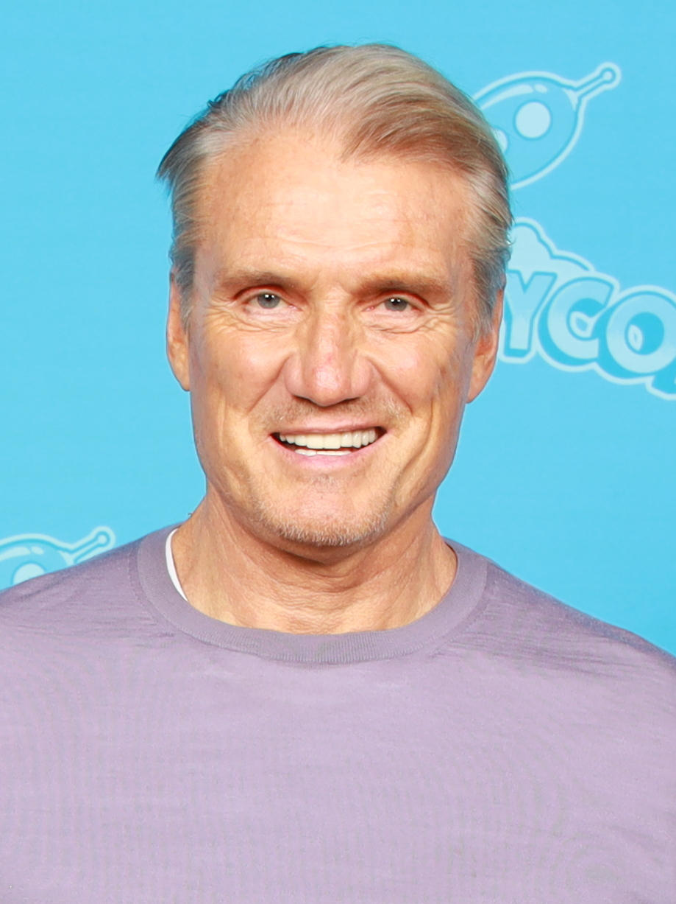
👤'">Dolph Lundgren
Famous actor who performed alongside Stallone in action films, including Rocky IV where he played the Soviet boxer Ivan Drago.
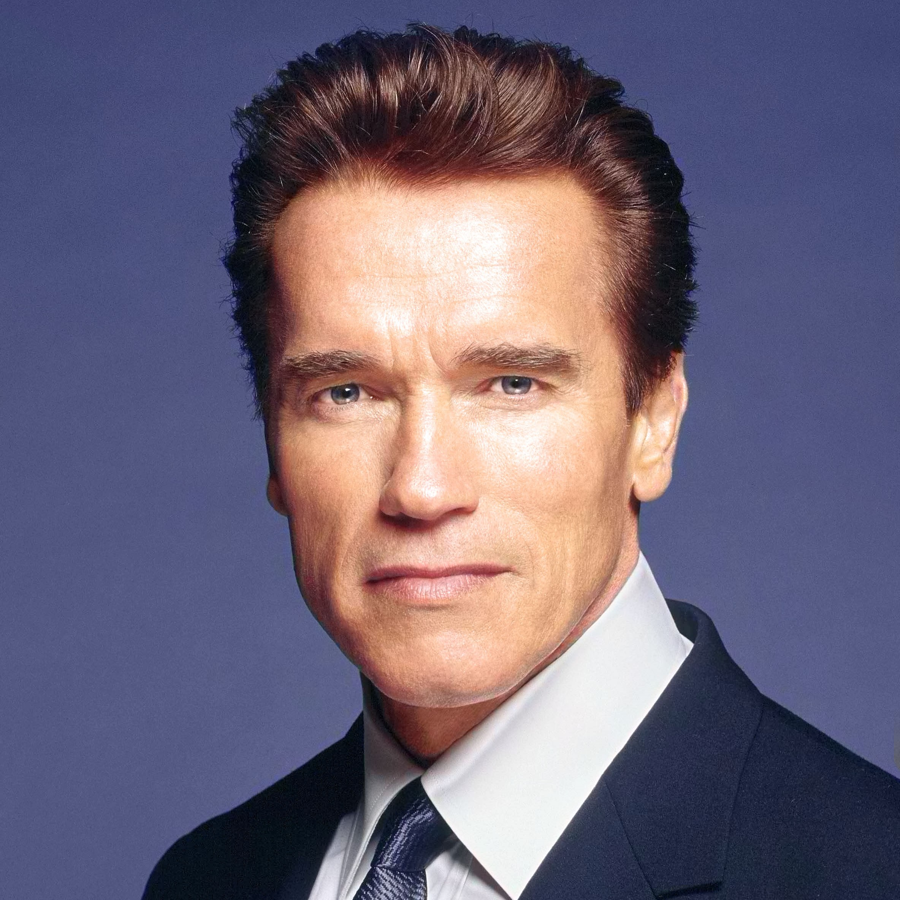
👤'">Arnold Schwarzenegger
Known for his role in The Terminator. He had a famous rivalry with Stallone — he laughed at him when Rocky lost at the 1977 Golden Globes — but their competition motivated both to make better movies.
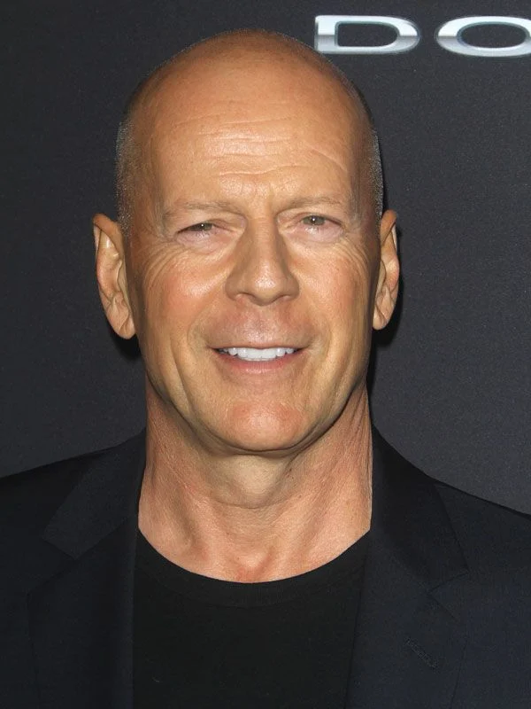
👤'">Bruce Willis
Performed alongside Stallone in The Expendables franchise, where they reunited the biggest action stars of several decades in an iconic series of films.
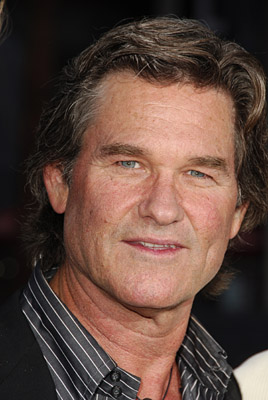
👤'">Kurt Russell
Another famous action star who performed alongside Stallone, forming part of the elite group of action icons that defined an entire era of Hollywood cinema.
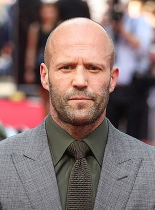
👤'">Jason Statham
Stallone has openly admitted that he admires Jason Statham's real martial-arts skills and work ethic. They worked together in The Expendables franchise.

Donald Trump
Stallone has been linked with politics. Donald Trump convinced him to become a diplomatic representative and special ambassador of Hollywood in 2025.
Reason to Choose a Role Model
Sylvester Stallone is a role model because his career shows perseverance and dedication in the film industry. He has worked with famous actors such as Dolph Lundgren, Bruce Willis, and Kurt Russell in many action movies. He also had a well-known rivalry with Arnold Schwarzenegger, which became part of action film history.
His movie Rocky earned him two Academy Award nominations, and later he won a Golden Globe for his role in Creed. Movies starring him have generated more than 4 billion dollars worldwide.
Stallone has had a career of more than fifty years. His characters Rocky Balboa and John Rambo were recognized as two of the greatest heroes in cinema history.
He received a star on the Hollywood Walk of Fame. His perseverance and success make him an inspiring figure for anyone who faces obstacles in life.
He refused to sell his Rocky script unless he could star in it — rejecting hundreds of offers. This decision, born out of pure self-belief, turned him into a global superstar.
About the Team
We are five students united by a passion for telling stories about people who inspire us. Like Stallone, we believe that perseverance and hard work lead to extraordinary results.